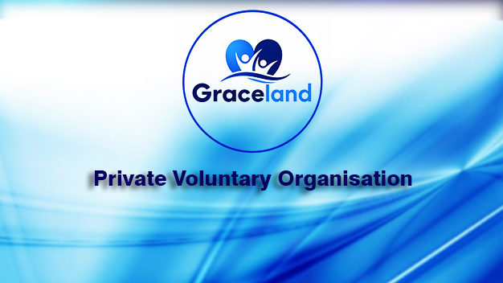
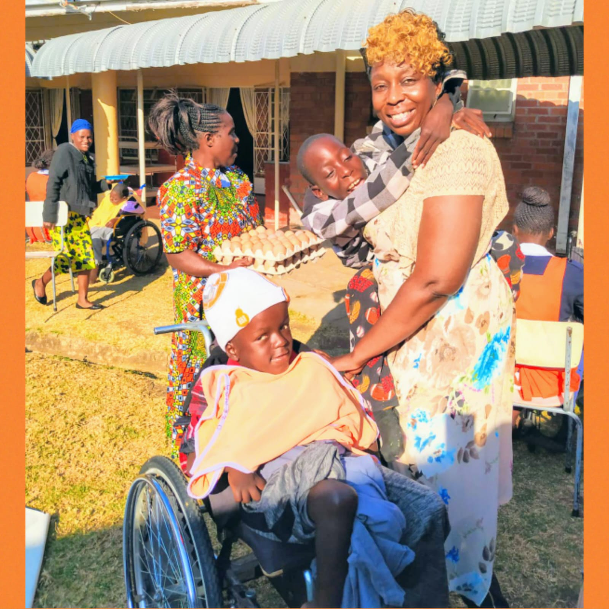

Graceland Private Voluntary Organization works alongside communities to alleviate poverty, improve healthcare, promote education, support vulnerable families, and create sustainable opportunities for a better future.

Driven by compassion, dignity, and service, Graceland works closely with disadvantaged children, persons with disabilities, vulnerable families, the elderly, and underserved communities to restore hope and create opportunities for a better future.
Graceland has positively impacted vulnerable communities through food and nutritional support, assistance to children living with disabilities, community outreach programmes, support for vulnerable households, promotion of social inclusion and dignity for persons with disabilities, and building partnerships that strengthen community development.
Graceland believes sustainable development is achieved through collaboration. We welcome partnerships with government ministries, local authorities, corporate organisations, churches, development agencies, international NGOs, community-based organisations, and individual donors and volunteers.
To improve the lives of vulnerable individuals and families through humanitarian assistance, healthcare, education, community empowerment, and sustainable development programmes.
To build empowered, healthy, self-reliant communities where every individual has the opportunity to live with dignity, hope, and purpose.
The principles that shape every programme, partnership and promise we make to the communities we serve.